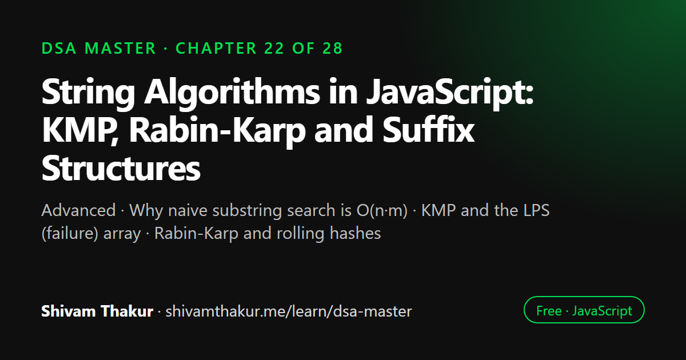

Chapter 22 of 28 · Advanced
String Algorithms in JavaScript: KMP, Rabin-Karp and Suffix Structures
String Algorithms — KMP, Rabin-Karp, and Suffix Structures

String matching algorithms find occurrences of a pattern inside a text faster than checking every position from scratch. KMP uses a precomputed LPS array so the text pointer never moves backwards, giving O(n + m) time, while Rabin-Karp compares rolling hashes of each window. This chapter implements both in JavaScript and introduces suffix arrays and suffix trees.
In this chapter you will learn
- Why naive substring search is O(n·m)
- KMP and the LPS (failure) array
- Rabin-Karp and rolling hashes
- Handling hash collisions
- Suffix arrays and suffix trees
22.0 The Problem With Naive Substring Search
The problem: given a text T of length n and a pattern P of length m, find all occurrences of P within T.
function naiveSearch(text, pattern) {
const matches = [];
for (let i = 0; i <= text.length - pattern.length; i++) {
let j = 0;
while (j < pattern.length && text[i + j] === pattern[j]) {
j++;
}
if (j === pattern.length) {
matches.push(i);
}
}
return matches;
}
// Time: O(n * m) worst case — for EVERY starting position, we might compare up to m charactersThe Concrete Worst Case
text = "aaaaaaaaaaaaaaaaaaaaaaaab" (many 'a's, then 'b')
pattern = "aaaab"
At almost EVERY starting position, we match several 'a's before finally failing
at the last character. We repeatedly re-examine characters we've already
confirmed match, throwing away that work every time a match attempt fails.
This is EXACTLY the same "wasted redundant work" signature we've seen before:
Chapter 2's naive Fibonacci recomputing shared sub-problems, Chapter 8's naive
isBalanced recomputing shared subtree heights. The fix follows the same
underlying philosophy: don't throw away information you've already learned.This chapter builds two genuinely different, both extremely important, escape routes from O(n·m): KMP (which never re-examines a text character it doesn't have to, by precomputing pattern self-similarity) and Rabin-Karp (which uses Chapter 4's hashing to check candidate positions in O(1) amortized time each).
22.1 The Knuth-Morris-Pratt (KMP) Algorithm
22.1.1 The Core Insight: Never Waste a Failed Comparison's Information
Definition: KMP precomputes, for a given pattern, a "failure function" (also called the LPS array — Longest Proper Prefix which is also a Suffix) that tells the algorithm, upon a mismatch, exactly how far it can safely skip ahead in the pattern without ever needing to re-examine already-matched text characters.
22.1.2 Building the LPS (Longest Proper Prefix-Suffix) Array
Definition: lps[i] = the length of the longest proper prefix of pattern[0..i] that is also a proper suffix of pattern[0..i]. ("Proper" means the prefix/suffix cannot be the entire substring itself.)
function buildLPS(pattern) {
const lps = new Array(pattern.length).fill(0);
let length = 0; // length of the previous longest prefix-suffix match
let i = 1;
while (i < pattern.length) {
if (pattern[i] === pattern[length]) {
length++;
lps[i] = length;
i++;
} else if (length > 0) {
length = lps[length - 1]; // fall back — DON'T reset to 0 immediately! (this IS the KMP insight, applied recursively to the pattern itself)
} else {
lps[i] = 0;
i++;
}
}
return lps;
}
console.log(buildLPS('aabaaab')); // [0,1,0,1,2,2,3]Dry Run: Building the LPS Array for 'aabaaab'
pattern = a a b a a a b
index = 0 1 2 3 4 5 6
lps[0] = 0 (always, by definition — a single character has no proper prefix)
length=0, i=1
i=1: pattern[1]='a', pattern[length=0]='a'. MATCH!
length=1, lps[1]=1, i=2
i=2: pattern[2]='b', pattern[length=1]='a'. NO MATCH. length(1) > 0 -> fall back: length = lps[0] = 0
(still no match: pattern[2]='b' vs pattern[length=0]='a', but length is now 0)
length is 0 -> lps[2] = 0, i=3
i=3: pattern[3]='a', pattern[length=0]='a'. MATCH!
length=1, lps[3]=1, i=4
i=4: pattern[4]='a', pattern[length=1]='a'. MATCH!
length=2, lps[4]=2, i=5
i=5: pattern[5]='a', pattern[length=2]='b'. NO MATCH. length(2)>0 -> fall back: length=lps[1]=1
pattern[5]='a' vs pattern[length=1]='a'. MATCH (after falling back)!
length=2, lps[5]=2, i=6
i=6: pattern[6]='b', pattern[length=2]='b'. MATCH!
length=3, lps[6]=3, i=7. Loop ends (i === pattern.length).
Final lps = [0,1,0,1,2,2,3]What the LPS Array Actually Tells You
lps[6] = 3 means: the longest proper prefix of 'aabaaab' that's also a proper suffix has length 3 — specifically, 'aab' (the first 3 characters) equals the last 3 characters ('aab', positions 4-6... let's verify: aabaaab, last 3 chars are 'a','a','b' = 'aab'. Yes, matches!). This self-similarity is exactly what lets KMP skip ahead intelligently upon a mismatch during actual text searching.
22.1.3 The Full KMP Search Algorithm
function kmpSearch(text, pattern) {
if (pattern.length === 0) return [];
const lps = buildLPS(pattern);
const matches = [];
let i = 0; // pointer into TEXT
let j = 0; // pointer into PATTERN
while (i < text.length) {
if (text[i] === pattern[j]) {
i++;
j++;
if (j === pattern.length) {
matches.push(i - j); // found a complete match!
j = lps[j - 1]; // continue searching for OVERLAPPING matches, using the LPS to skip intelligently
}
} else if (j > 0) {
j = lps[j - 1]; // MISMATCH: fall back using the LPS array — NEVER move `i` backward!
} else {
i++; // no partial match to fall back on — just advance the text pointer
}
}
return matches;
}
console.log(kmpSearch('ababcababcababc', 'ababc')); // [0, 5, 10]Why This Is O(n + m), Not O(n·m) — The Crucial Guarantee
The single most important property to internalize: i (the text pointer) NEVER moves backward, ever, at any point in the entire algorithm. Every single character in the text is examined a bounded number of times (in practice, i only ever increases), while j (the pattern pointer) can fall back, but only using the precomputed LPS array — an O(1) lookup, not a re-scan. Building the LPS array itself is O(m) (a single pass, using the same "amortized, total movement bounded" argument as Chapter 21's monotonic stack — length in buildLPS also never needs to redo work). Combined: O(n) for the search pass + O(m) for LPS construction = O(n + m) total — a dramatic, guaranteed improvement over the naive O(n·m), with zero risk of the pathological worst case that plagues the naive approach.
22.2 The Rabin-Karp Algorithm: Hashing to the Rescue
22.2.1 The Core Insight: Compare Hashes First, Characters Only on a Hash Match
Definition: Rabin-Karp computes a rolling hash of the pattern and of every equal-length substring ("window") of the text, comparing hashes first (O(1) each, after setup) and only falling back to a full character-by-character comparison when hashes match (as a safeguard against hash collisions — directly recalling Chapter 4's collision discussion).
22.2.2 The Rolling Hash: Updating in O(1) as the Window Slides
The key technical trick that makes Rabin-Karp efficient: as the comparison window slides one position to the right, we can compute the new window's hash from the old window's hash in O(1), without rehashing the entire substring from scratch — directly the same "subtract what leaves, add what enters" idea as Chapter 3's sliding window sum optimization.
function rabinKarpSearch(text, pattern) {
const n = text.length;
const m = pattern.length;
if (m > n) return [];
const BASE = 256; // treating characters as base-256 "digits"
const MOD = 1_000_000_007; // a large prime, to keep hash values manageable and reduce collisions
let patternHash = 0;
let windowHash = 0;
let highOrderMultiplier = 1; // BASE^(m-1) % MOD, needed to "remove" the leftmost character when sliding
for (let i = 0; i < m - 1; i++) {
highOrderMultiplier = (highOrderMultiplier * BASE) % MOD;
}
for (let i = 0; i < m; i++) {
patternHash = (patternHash * BASE + pattern.charCodeAt(i)) % MOD;
windowHash = (windowHash * BASE + text.charCodeAt(i)) % MOD;
}
const matches = [];
for (let i = 0; i <= n - m; i++) {
if (patternHash === windowHash) {
// Hash matches — but VERIFY character-by-character to guard against collisions!
if (text.substring(i, i + m) === pattern) {
matches.push(i);
}
}
if (i < n - m) {
// ROLL the hash forward: remove the leftmost character's contribution, add the new rightmost character
windowHash = (
(windowHash - text.charCodeAt(i) * highOrderMultiplier) * BASE +
text.charCodeAt(i + m)
) % MOD;
if (windowHash < 0) windowHash += MOD; // JavaScript's % can return negative results — normalize!
}
}
return matches;
}
console.log(rabinKarpSearch('ababcababcababc', 'ababc')); // [0, 5, 10]22.3 A Conceptual Introduction to Suffix Arrays and Suffix Trees
22.3.1 Suffix Arrays
Definition: A suffix array of a string is a sorted array of all of that string's suffixes (or, more precisely and efficiently, an array of the starting indices of all suffixes, sorted according to the suffixes' lexicographic order).
function buildSuffixArray(text) {
const n = text.length;
const suffixes = [];
for (let i = 0; i < n; i++) {
suffixes.push({ index: i, suffix: text.substring(i) });
}
suffixes.sort((a, b) => (a.suffix < b.suffix ? -1 : a.suffix > b.suffix ? 1 : 0));
return suffixes.map(s => s.index);
}
console.log(buildSuffixArray('banana'));
// Suffixes: "banana"(0), "anana"(1), "nana"(2), "ana"(3), "na"(4), "a"(5)
// Sorted: "a"(5), "ana"(3), "anana"(1), "banana"(0), "na"(4), "nana"(2)
// Suffix array: [5, 3, 1, 0, 4, 2]22.3.2 Suffix Trees (Conceptual Overview)
Definition: A suffix tree is a compressed trie (recall Chapter 10's radix tree / compressed trie preview!) containing every suffix of a string, enabling extremely fast substring queries — pattern search in O(m) time, independent of the text's length n, after an O(n) construction.
22.4 Edge Cases and Gotchas Checklist for String Algorithm Problems
- Empty pattern or empty text. Verify each algorithm's behavior is explicitly defined and sensible (an empty pattern typically "matches" at every position, or is defined as a special no-op case — state your convention).
- Pattern longer than text. Should immediately return no matches, without attempting any comparisons.
- Pattern equals the entire text. A boundary case worth verifying explicitly for both KMP and Rabin-Karp.
- Overlapping matches (e.g., searching for
"aa"in"aaaa") — verify your algorithm correctly finds all overlapping occurrences, not just non-overlapping ones (KMP'sj = lps[j-1]continuation after a match, shown in section 22.1.3, is specifically what enables this). - Hash collisions in Rabin-Karp — always include the character-by-character verification step; never skip it as a "probably fine" optimization.
- JavaScript's modulo operator returning negative values in rolling hash calculations — always explicitly normalize.
- Unicode/multi-byte characters — per Chapter 3's lesson,
charCodeAtoperates on UTF-16 code units, not full Unicode code points; be aware of this if pattern matching needs to be correct across the full Unicode range, not just ASCII/BMP text.
22.5 Chapter Summary
This chapter tackled substring search, opening with a concrete demonstration that naive O(n·m) search wastes exactly the same kind of redundant, already-known information that Chapter 2's naive Fibonacci and Chapter 8's naive isBalanced wasted — a recurring theme throughout this book that "the fix is almost always: don't recompute what you already know." We built KMP around the precomputed LPS (Longest Proper Prefix-Suffix) array, which encodes a pattern's internal self-similarity, letting the search phase guarantee that the text pointer never moves backward — a genuinely powerful, unconditional O(n+m) guarantee with zero pathological worst case, achieved by ensuring every failed comparison's partial-match information gets reused via an O(1) LPS lookup rather than discarded.
We built Rabin-Karp as a fundamentally different escape route, directly extending Chapter 4's hashing philosophy and Chapter 3's sliding-window rolling-update technique: compute a rolling hash for each text window in O(1) per slide, compare hashes cheaply, and fall back to full character verification only on a hash match — with the crucial, non-negotiable correctness requirement (directly recalling Chapter 4's collision guarantee) that a hash match must always be verified character-by-character before being reported as a confirmed result, since collisions are mathematically inevitable, not a remote theoretical concern. We flagged a specifically JavaScript gotcha along the way: the % operator can return negative results for negative dividends, requiring explicit normalization in rolling-hash arithmetic — a subtle, real bug source worth knowing cold.
We closed with a conceptual (not full-implementation) introduction to suffix arrays and suffix trees, framed explicitly around the "pay a one-time construction cost, then answer many queries cheaply" trade-off family this book has built repeatedly since Chapter 3's prefix sums and Chapter 10's tries — and made the connection to Chapter 10 as concrete as possible: a suffix tree is literally Chapter 10's trie/compressed-trie concept, retargeted at every suffix of a single text rather than a curated word dictionary. We were honest, in the same spirit as this book's treatment of AVL/Red-Black trees (Chapter 8) and Union-Find's amortized bound (Chapter 14), that genuinely efficient suffix structure construction is an advanced topic beyond typical interview implementation expectations, while conceptual fluency — knowing what these structures enable and why — remains a valuable, realistic, and expected level of depth.
22.6 Revision Notes
- Naive substring search is O(n·m), wasting redundant information exactly like naive Fibonacci (Chapter 2) or naive isBalanced (Chapter 8) — the fix is the same underlying philosophy: don't recompute what you already know.
- KMP's LPS array encodes a pattern's internal self-similarity, guaranteeing the text pointer never moves backward during search — an unconditional O(n+m), with zero pathological worst case.
- Rabin-Karp uses a rolling hash (directly extending Chapter 3's sliding-window update and Chapter 4's hashing) for O(1)-per-window comparison, but MUST verify character-by-character on every hash match — collisions are mathematically inevitable (Chapter 4's pigeonhole principle), not a remote concern.
- JavaScript's
%can return negative results for negative dividends — always normalize in rolling-hash arithmetic. - KMP guarantees O(n+m) worst case unconditionally; Rabin-Karp's real strength is efficient multi-pattern search via precomputed hashes.
- Suffix arrays/trees enable "build once, query many times cheaply" pattern search — a suffix tree is literally Chapter 10's trie/compressed-trie concept applied to every suffix of a text.
- Genuinely efficient suffix structure construction (SA-IS, Ukkonen's algorithm) is advanced and beyond typical interview implementation expectations; conceptual fluency is the expected depth.
22.7 Mind Map (ASCII)
STRING ALGORITHMS
|
+------------------+------------+------------+----------------------+
| | | |
NAIVE O(n*m) KMP RABIN-KARP SUFFIX ARRAYS/TREES
SEARCH (LPS array) (rolling hash) (build ONCE,
| | | query MANY times)
Wastes redundant "Never re-examine Ch.3 sliding window |
info -- SAME text you've rolling update Suffix Array:
pattern as naive already matched" + Ch.4 hashing sorted suffixes,
Fibonacci (Ch.2), | | O(m log n) search
naive isBalanced i NEVER moves MUST verify on via binary search
(Ch.8) backward -- LPS hash match! (Ch.4 (Ch.16)
gives O(1) fallback collisions are |
on mismatch MATHEMATICALLY Suffix Tree =
| INEVITABLE) Ch.10's trie/
O(n+m) GUARANTEED | compressed trie,
(unconditional, JS gotcha: % retargeted at
no pathological can return EVERY SUFFIX of
worst case) NEGATIVE! Must one text
| normalize |
Best for: SINGLE | O(m) search after
pattern, hard O(n+m) avg, O(n) construction
guarantee needed O(n*m) worst (Ukkonen's algo --
(poor hash fn) ADVANCED, conceptual
| knowledge expected,
Best for: MULTI- not implementation)
PATTERN search22.8 Cheat Sheet
COMPLEXITY COMPARISON
=========================
Naive search: O(n*m) worst case
KMP: O(n+m) GUARANTEED (unconditional, no worst-case degradation)
Rabin-Karp: O(n+m) average, O(n*m) worst (poor hash function)
Suffix Array: O(n log n) or better construction (specialized algo), O(m log n) per query
Suffix Tree: O(n) construction (Ukkonen's, advanced), O(m) per query
KMP LPS ARRAY
================
lps[i] = length of longest proper prefix of pattern[0..i] that's also a proper suffix
Build: if match, extend; if mismatch, fall back using lps[length-1] (DON'T reset to 0 directly!)
Search: on mismatch, j = lps[j-1] (fall back in PATTERN); i NEVER moves backward in TEXT
RABIN-KARP ROLLING HASH
===========================
newHash = ((oldHash - leftChar*highOrderMultiplier) * BASE + newRightChar) % MOD
ALWAYS verify character-by-character after a hash match (collisions are real!)
ALWAYS normalize negative results: if (hash < 0) hash += MOD; (JS % can be negative!)
DECISION GUIDE
=================
Single pattern, need guaranteed worst-case performance -> KMP
Multiple patterns to search simultaneously -> Rabin-Karp (hash all patterns upfront)
Many DIFFERENT queries against the SAME fixed text -> Suffix Array / Suffix Tree22.9 Key Takeaways
- Naive substring search wastes redundant match information — the same underlying inefficiency pattern as naive Fibonacci and naive isBalanced, fixed by the same "don't recompute what you know" philosophy.
- KMP's LPS array guarantees the text pointer never moves backward, achieving unconditional O(n+m) with zero pathological worst case.
- Rabin-Karp's rolling hash gives O(1)-per-window comparison, but character-by-character verification after every hash match is non-negotiable — collisions are mathematically inevitable, not a remote concern.
- JavaScript's
%can return negative values — always normalize in rolling-hash arithmetic. - Suffix arrays and suffix trees trade a one-time construction cost for fast repeated queries; a suffix tree is literally Chapter 10's trie concept retargeted at every suffix of a text.
22.10 20 Multiple Choice Questions
Tap an answer to check it. Your score updates as you go.
Score: 0 / 0 answered (20 questions)
What is the time complexity of naive substring search in the worst case?
What does the KMP LPS array represent?
What is the key guarantee that makes KMP achieve O(n+m) worst-case time?
What happens when a mismatch occurs during KMP's search phase?
What is the core mechanism of the Rabin-Karp algorithm?
What must ALWAYS happen after a hash match is found in Rabin-Karp?
Why are hash collisions in Rabin-Karp a genuine concern, not just theoretical?
What is a JavaScript-specific gotcha relevant to rolling hash calculations?
What is the worst-case time complexity of Rabin-Karp?
What is a key practical advantage of Rabin-Karp over KMP?
What is a suffix array?
What is the complexity of the naive suffix array construction shown in this chapter?
What technique enables O(m log n) pattern search using a suffix array?
What is a suffix tree, in relation to concepts from Chapter 10?
What is the time complexity of pattern search using a fully-constructed suffix tree?
What advanced algorithm achieves O(n) suffix tree construction?
What is the expected level of depth for suffix trees/arrays in most technical interviews?
What underlying philosophy connects naive substring search's inefficiency to naive Fibonacci (Chapter 2) and naive isBalanced (Chapter 8)?
What trade-off do suffix arrays/trees share with Chapter 3's prefix sums and Chapter 10's tries?
What should you verify when implementing KMP or Rabin-Karp for overlapping pattern matches (e.g., "aa" in "aaaa")?
Show the answer key
1-b, 2-b, 3-b, 4-b, 5-b, 6-b, 7-b, 8-b, 9-b, 10-b, 11-b, 12-b, 13-b, 14-b, 15-b, 16-b, 17-b, 18-b, 19-b, 20-b
22.11 20 Coding Problems
Easy
- Implement naive substring search from memory, and identify its worst-case input by construction.
- Implement
buildLPSfrom memory (section 22.1.2), and verify against the book's dry run for'aabaaab'. - Given a string, use the LPS array concept to determine the shortest possible "period" of a repeating string (e.g., "abcabcabc" has period "abc").
- Write a simple (non-rolling) hash function for strings, and verify it produces the same hash for identical strings.
- Given two strings, determine if one is a rotation of the other (hint: check if the target is a substring of the source concatenated with itself).
Medium
- Implement
kmpSearchfully from memory (section 22.1.3), and verify it finds overlapping matches correctly. - Implement
rabinKarpSearchfully from memory (section 22.2.2), including the negative-modulo normalization, and verify against a hand-constructed hash collision test case (two different strings you've confirmed hash to the same value with your specific BASE/MOD). - Given a list of multiple patterns and one text, implement multi-pattern search using Rabin-Karp (hash all patterns upfront, check each window against the set).
- Implement the naive suffix array construction from memory (section 22.3.1), and use it to find the longest repeated substring in a text.
- Given a string, determine the longest palindromic substring using an "expand around center" approach, and discuss in comments how this relates to (but differs from) the string-matching techniques in this chapter.
Hard
- Implement a function to find all anagram substrings of a pattern within a text (hint: combine Chapter 4's frequency-counting with Chapter 3's sliding window, contrasting this approach against KMP/Rabin-Karp for this specific problem shape).
- Given a text and a pattern with wildcard characters (where '?' matches any single character), adapt KMP or implement a DP-based approach (connecting back to Chapter 19) to find all matches.
- Implement the "Z-function" (a related string-preprocessing technique to KMP's LPS array, computing for every position the length of the longest substring starting there that matches a prefix of the string), and use it to solve pattern matching as an alternative to KMP.
- Given a very large text and a very large set of patterns (too many for practical individual Rabin-Karp hashing), describe (with a smaller simulated implementation) how the Aho-Corasick algorithm (combining Chapter 10's trie with KMP's failure-function concept) would efficiently solve simultaneous multi-pattern search.
- Implement a basic longest common substring finder between two strings using the suffix-array-based approach (concatenate with a separator, build the combined suffix array, analyze adjacent sorted suffixes).
Interview Level
- (Google-level) Given a massive log corpus and a need to repeatedly search for different error-message patterns, design a system choosing between KMP (single pattern, repeated searches) and Rabin-Karp (multiple patterns) based on the actual query pattern, justifying your choice in comments.
- (Amazon-level) Given a product search feature needing substring matching across millions of product names, implement Rabin-Karp for efficient multi-keyword search, discussing hash collision mitigation strategies for production reliability.
- (Microsoft-level) Given a plagiarism detection requirement (finding common substrings between two large documents), use the suffix-array-based longest-common-substring technique (problem 15) and discuss its scalability compared to a naive O(n²) character-by-character comparison approach.
- (Meta-level) Given a content moderation system needing to detect banned phrases (including common obfuscated variants) in user posts, implement KMP for exact matching and discuss in comments what additional techniques (fuzzy matching, edit distance from Chapter 19) would be needed for the obfuscated-variant detection.
- (Netflix-level) Design a subtitle search feature allowing users to search for a spoken line across an entire show's transcript (a large text corpus), using suffix array concepts to enable fast repeated substring queries, and discuss the trade-off between build-time cost (constructing the suffix array once per transcript) and query-time speed at scale.
22.12 5 Interview Questions
- "Implement KMP's LPS array construction, and explain what it represents." (Tests both implementation and conceptual understanding of self-similarity encoding.)
- "Why does KMP guarantee O(n+m) time, unlike naive search?" (Tests understanding of the "text pointer never moves backward" guarantee specifically.)
- "Implement Rabin-Karp, and explain why you must verify after a hash match." (Tests both implementation and the non-negotiable collision-verification requirement.)
- "When would you choose Rabin-Karp over KMP, or vice versa?" (Tests the single-pattern-guarantee vs. multi-pattern-efficiency decision framework.)
- "What is a suffix array, and how does it relate to a trie (Chapter 10)?" (Tests conceptual fluency and cross-chapter connection-making, not implementation depth.)
22.13 3 Real Projects
- Complete String-Matching Library: Implement naive search, KMP, and Rabin-Karp in a single library, with a self-check script verifying all three produce identical match results across randomized text/pattern pairs, and benchmarking their performance on both average-case and adversarially-constructed worst-case inputs (e.g., KMP's guaranteed performance versus naive search's pathological slowdown on repetitive text).
- Multi-Pattern Log Scanner: Build a Node.js CLI tool that scans a log file for multiple error-message patterns simultaneously using Rabin-Karp's multi-pattern technique, reporting all matches with their line numbers.
- Plagiarism/Similarity Checker: Build a tool implementing the suffix-array-based longest-common-substring technique to compare two text documents and report their longest shared passage, along with a simple "similarity score" based on the shared substring's length relative to document size.
22.14 Further Reading
- Donald Knuth, James Morris, and Vaughan Pratt's original 1977 paper introducing KMP, and Richard Karp and Michael Rabin's original paper introducing Rabin-Karp — both foundational, genuinely readable papers in the history of algorithm design.
- Search "Z-function algorithm" for the closely-related string-preprocessing technique mentioned in coding problem #13, often taught alongside KMP.
- Search "Aho-Corasick algorithm" for the trie-plus-failure-function combination (mentioned in coding problem #14) that efficiently generalizes KMP's single-pattern guarantee to simultaneous multi-pattern search.
- Search "SA-IS algorithm suffix array construction" and "Ukkonen's algorithm suffix tree" for the genuinely advanced, linear-time construction techniques referenced but not fully implemented in section 22.3.
- LeetCode's "String Matching" and "KMP Algorithm" tagged problems, for extensive additional practice.
String Algorithms: frequently asked questions
What is the KMP algorithm?
Knuth-Morris-Pratt is a string matching algorithm that precomputes, for every prefix of the pattern, the longest proper prefix that is also a suffix (the LPS array). On a mismatch it shifts the pattern using that table instead of restarting, finding all matches in O(n + m) time.
How does Rabin-Karp work?
Rabin-Karp computes a hash of the pattern and a rolling hash of each text window, updating the window hash in O(1) as it slides. Only when the hashes match does it compare characters, which confirms the match and guards against collisions.
KMP or Rabin-Karp: which should I use?
KMP guarantees O(n + m) in the worst case and is ideal for a single pattern. Rabin-Karp is simpler to extend to searching many patterns at once or to finding repeated substrings, but its worst case is O(n·m) if collisions are frequent.
Why do rolling hashes in JavaScript need special care with %?
JavaScript's % operator keeps the sign of the dividend, so subtracting the outgoing character can produce a negative remainder. Normalize with ((x % mod) + mod) % mod, and keep values below Number.MAX_SAFE_INTEGER or use BigInt.